library(dplyr)
library(tidyr)
library(ggplot2)
library(terra)
source("./functions.R")
mitkof <- readRDS(
"/Users/Jeff/Dropbox/Documents/TealWaters/Data/Tongass/mitkof_rasters/mitkof_state.rds")
wrangell <- readRDS(
"/Users/Jeff/Dropbox/Documents/TealWaters/Data/Tongass/wrangell_rasters/wrangell_state.rds")
mitkof <- load_rstack(mitkof)
wrangell <- load_rstack(wrangell)
covariates <- c("UpDist_m", "UpArea_m2", "gradient","log_grad",
"tangential_curv","log_width",
"Prof", "logaccum", "dem", "drop","start_grad","grad_roll", "tan_roll")
width_prep <- function(island){
df <- island$nodes_df
df <- df[df$Width_m>0,]
df$log_width <- log10(df$Width_m)
return(df)
}
mitkof$nodes_df <- width_prep(mitkof)
wrangell$nodes_df <- width_prep(wrangell)Inundation
Modeling Inundation
The runout modeling described on the previous page provides a raster map of the probability that each pixel will be along the center axis of a landslide runout pathway. However, the hazard of landslide inundation extends across the landslide width, not just the centerline pixel. We therefore need some way of estimating the breadth of the landslide as it flows downslope. Most existing landslide indunation models require some estimate of landslide volume and then use empirical scaling relationships combined with cross-sectional topography to model inundation. This approach can work well when landslide volumes are known or can be reliably predicted. However, we do not have estimates of landslide volume.
Instead of relying on volume estimates, we have adopted a more direct statistical approach to modeling landslide width. We measured landslide width for every node along the centerlines of the mapped landslides. We compare those width measurements against topographic and positional metrics at the same locations and build a statistical model based on those relationships. We use that model to estimate a landslide width for every pixel in the study area. We then combine runout and width rasters to estimate inundation probability everywhere in the landscape.
Modeling Landslide Width
The width of a landslide’s runout path depends on its volume, velocity, and topographic confinement. We can estimate topographic confinement directly through our measurement of tangential curvature over a 30 m length scale. Local velocity is a function of several properties that we have no estimates of (material properties of the flow, flow thickness, and flow momentum), as well as one property that we can measure: topographic gradient. We have no estimates of volume for previously mapped landslides and therefore have no ability to model volume directly. However, volume may depend on topographic and positional covariates that are included in the nodes dataset. For example, as landslides runout to lower elevations and larger contributing areas, volumes initially grow as landslides entrain more material, until gradients decline and deposition shrinks landslide volumes. In short, landslide width depends, if indirectly, on the topographic properties we’ve measured for every pixel in the landscape and summarized for each landslide runout node.
As we’ve already noted for the runout modeling, some of the node properties are measured only from local properties and do not depend on the runout path, others are functions the runout path (e.g., the distance traveled, the cumulative vertical drop of the slide, conditions at the initation zone, and rolling averages of gradient and curvature). Again, to avoid compounding the uncertainties in predictions for initiation and runout path onto landslide width, we favor predictors with no path dependence (measured only from local properties).
We first investigate correlations between width and individual covariates below.
Mitkof
First, let’s have a look at the width values from Mitkof. The plots below show that width values are roughly log-normally distributed. We’ll model the log of width.
par(mfrow = c(1, 2))
data <- mitkof$nodes_df$Width_m
hist(data,main = "",xlab = "Runout Width (m)",prob = TRUE)
x_seq <- seq(min(data), max(data), length.out = 200)
curve(dnorm(x, mean = mean(data), sd = sd(data)),
add = TRUE, col = "red", lwd = 2)
data <- mitkof$nodes_df$log_width
hist(data,main = "",xlab = "log10(Runout Width)",prob = TRUE)
x_seq <- seq(min(data), max(data), length.out = 200)
curve(dnorm(x, mean = mean(data), sd = sd(data)),
add = TRUE, col = "red", lwd = 2)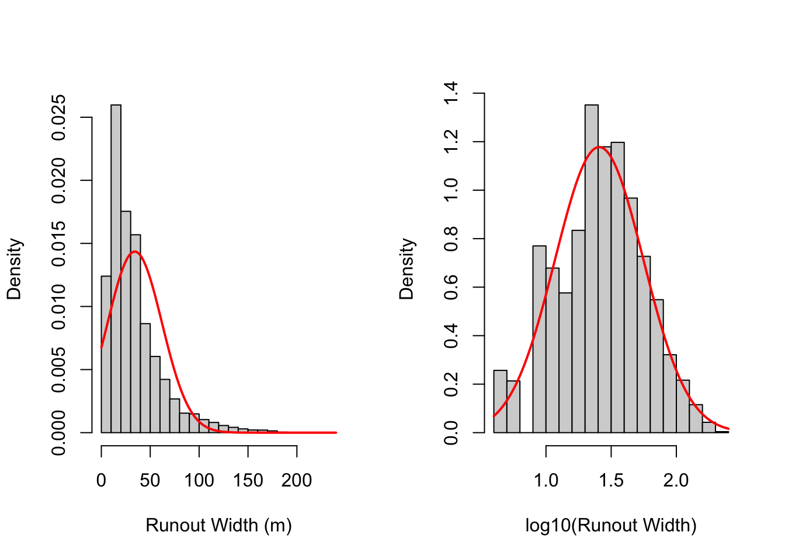
width_scatter(mitkof)Warning: The `label.size` argument of `geom_label()` is deprecated as of ggplot2 3.5.0.
ℹ Please use the `linewidth` argument instead.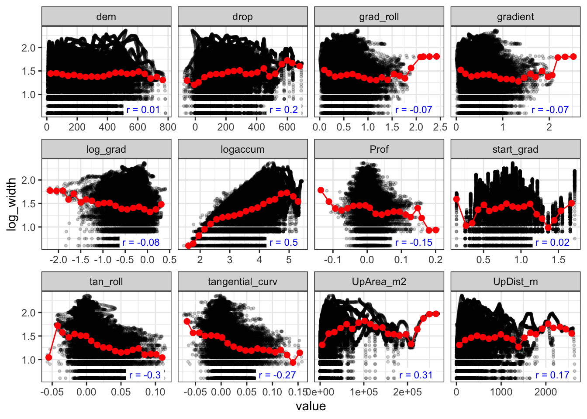
For Mitkof, the strongest correlations are with measures of contributing area. The logarithm of accumulation area logaccum is the strongest and has no runout path dependence. The next strongest group of predictors are measures of curvature. Both local tangential curvature tangential_curv and the rolling average of that value are strong predictors. tan_roll has a slight edge but is a path-dependent predictor. Positional covariates, ones define the position of the pixel in the landscape (elevation dem) or with respect to the flowpath (landslide runout UpDist_m and vertical drop drop), are the next strongest predictors. Path-dependent positional predictors are quite strong, while dem has no apparent correlation. We will test both in the model. Finally, measures of gradient are decent predictors, with logarithm of local gradient log_grad being strongest.
Below, we build a width model for Mitkof island using logaccum, tangential_curv, log_grad, and we test the positional variables.
mitkof$width_fit <- width_mod(mitkof$nodes_df,log_width ~ logaccum + tangential_curv + log_grad + dem)
Call:
lm(formula = form, data = nodes_df)
Residuals:
Min 1Q Median 3Q Max
-1.1902 -0.1728 0.0240 0.1958 0.7775
Coefficients:
Estimate Std. Error t value Pr(>|t|)
(Intercept) 1.928e-01 8.184e-03 23.56 <2e-16 ***
logaccum 3.089e-01 1.961e-03 157.50 <2e-16 ***
tangential_curv -4.295e+00 5.685e-02 -75.55 <2e-16 ***
log_grad 1.484e-01 5.397e-03 27.49 <2e-16 ***
dem 4.563e-04 9.306e-06 49.04 <2e-16 ***
---
Signif. codes: 0 '***' 0.001 '**' 0.01 '*' 0.05 '.' 0.1 ' ' 1
Residual standard error: 0.2695 on 55979 degrees of freedom
Multiple R-squared: 0.3668, Adjusted R-squared: 0.3667
F-statistic: 8107 on 4 and 55979 DF, p-value: < 2.2e-16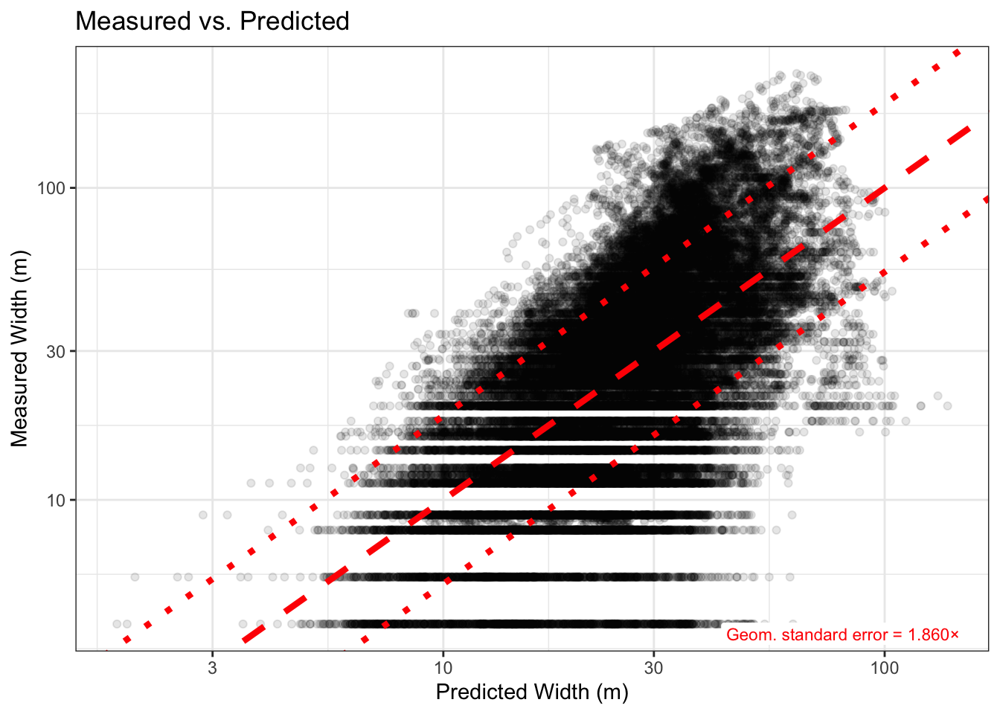
mitkof$width_se <- sigma(mitkof$width_fit)For simplicity, we use a multiple linear regression model to predict the width of landslide runout paths and we’ll assess performance by measuring the geometric standard error of the fit (the value by which you multiply or divide a prediction to capture ±1 standard deviation on the original scale). We will use this standard error value later for expanding runout probabilities across the landscape.
The geometric standard deviation of the width data is 2.18. By modeling log_width using local topographic metrics logaccum, tangential_curv, log_grad, we reduce the geometric standard error to GSE = 1.886, meaning that the model explains 34% of the variance in width. By adding the cumulative vertical drop drop (the strongest of the positional predictors) the model has GSE = 1.827 (41% of the variance explained). If we substitute the local elevation dem for drop the model has GSE = 1.862 (37% of the variance explained).
The path-dependent positional variable drop clearly has more predictive power than elevation (dem), but for a dataset where the initiation areas and runout paths are known from air-photo mapping. For predicting the widths of potential future slides, we can only estimate vertical drop from the predicted runout paths from predicted initiation areas. Errors in those predictions will then compound in our predictions of width. Moreover, modeling width from only local parameters (those that don’t depend on the runout path) is much simpler to implement. Consequently, we opt for the following width model for Mitkof:
\[ \text{log\_width} = 0.20 + 0.31 \text{logaccum} - 4.3 \text{tangential\_curv} + 0.14 \text{log\_grad} + 0.00045 \text{dem} \]
width_map <- 10^predict(mitkof$test_stack,mitkof$width_fit)
plot(mitkof$test_stack$hs, col = gray.colors(256), legend = FALSE,
main = "Mitkof Widths (m)")
plot(width_map,add = TRUE, alpha = 0.5, col = rev(hcl.colors(256, "RdYlGn")))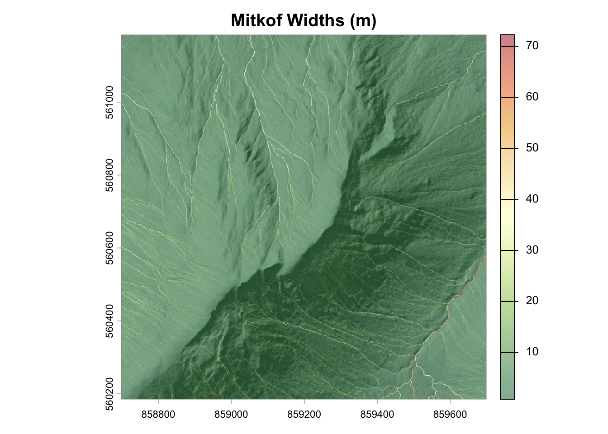
Wrangell
The distribution of widths on Wrangell is similar to Mitkof:
par(mfrow = c(1, 2))
data <- wrangell$nodes_df$Width_m
hist(data,main = "",xlab = "Runout Width (m)",prob = TRUE)
x_seq <- seq(min(data), max(data), length.out = 200)
curve(dnorm(x, mean = mean(data), sd = sd(data)),
add = TRUE, col = "red", lwd = 2)
data <- wrangell$nodes_df$log_width
hist(data,main = "",xlab = "log10(Runout Width)",prob = TRUE)
x_seq <- seq(min(data), max(data), length.out = 200)
curve(dnorm(x, mean = mean(data), sd = sd(data)),
add = TRUE, col = "red", lwd = 2)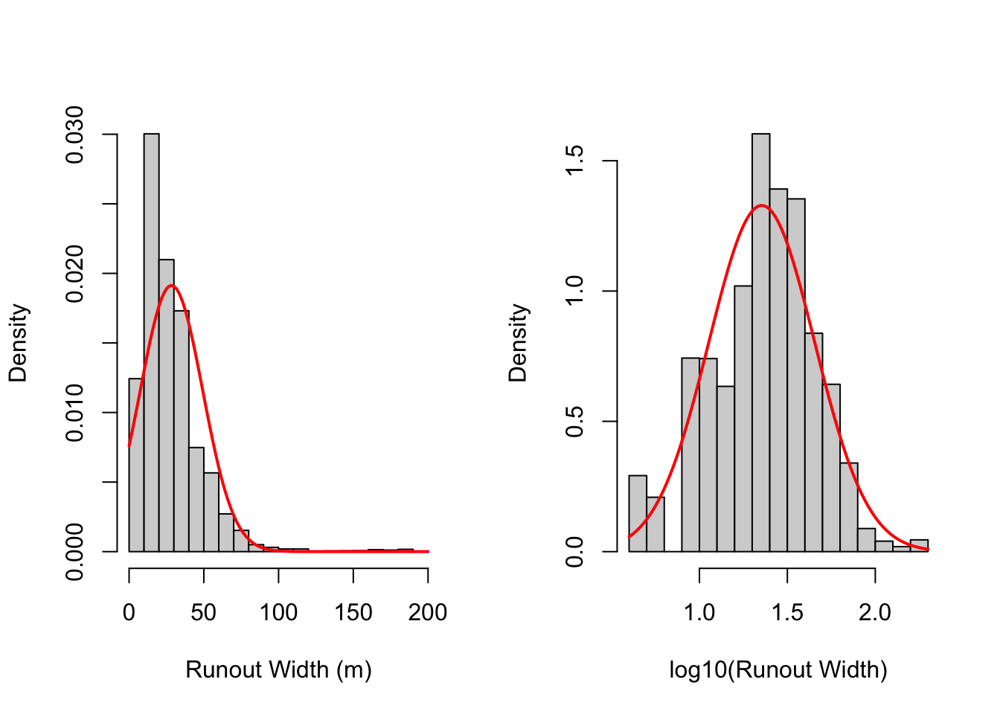
width_scatter(wrangell)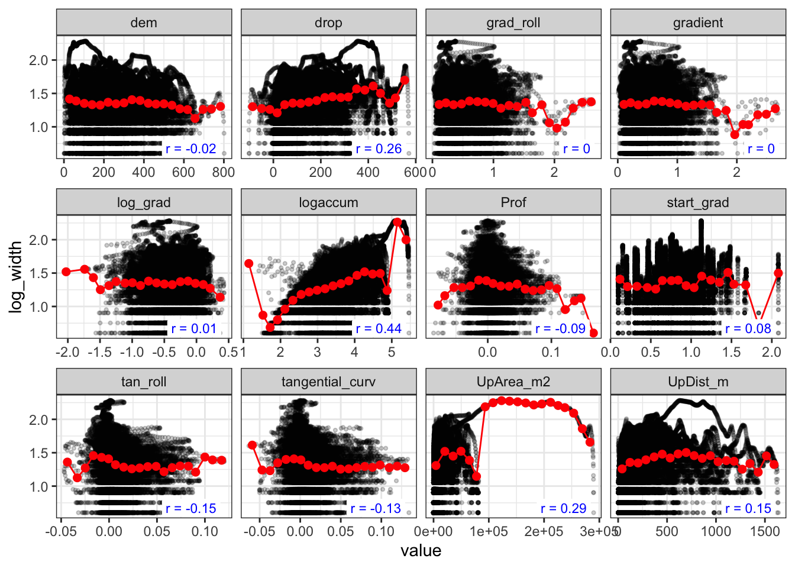
Similar to Mitkok, the strongest correlations for Wrangell widths are with measures of contributing area. Unlike Mitkof, positional covariates are more predictive than curvature, and measures of gradient are minimally predictive. Weighing the strength of correlation and runout-path dependence, the best predictors with the topographic categories are the same as Mitkof: logaccum, tangential_curv, log_grad. We will again start building a model with those variables and then test the performance of the various positional covariates.
wrangell$width_fit <- width_mod(wrangell$nodes_df,log_width ~ logaccum + tangential_curv + log_grad + dem)
Call:
lm(formula = form, data = nodes_df)
Residuals:
Min 1Q Median 3Q Max
-1.08565 -0.14956 0.03134 0.18041 1.00019
Coefficients:
Estimate Std. Error t value Pr(>|t|)
(Intercept) 4.260e-01 9.699e-03 43.92 <2e-16 ***
logaccum 2.725e-01 2.454e-03 111.04 <2e-16 ***
tangential_curv -2.670e+00 7.979e-02 -33.46 <2e-16 ***
log_grad 2.673e-01 6.060e-03 44.12 <2e-16 ***
dem 1.733e-04 1.112e-05 15.58 <2e-16 ***
---
Signif. codes: 0 '***' 0.001 '**' 0.01 '*' 0.05 '.' 0.1 ' ' 1
Residual standard error: 0.2546 on 33835 degrees of freedom
Multiple R-squared: 0.2809, Adjusted R-squared: 0.2808
F-statistic: 3305 on 4 and 33835 DF, p-value: < 2.2e-16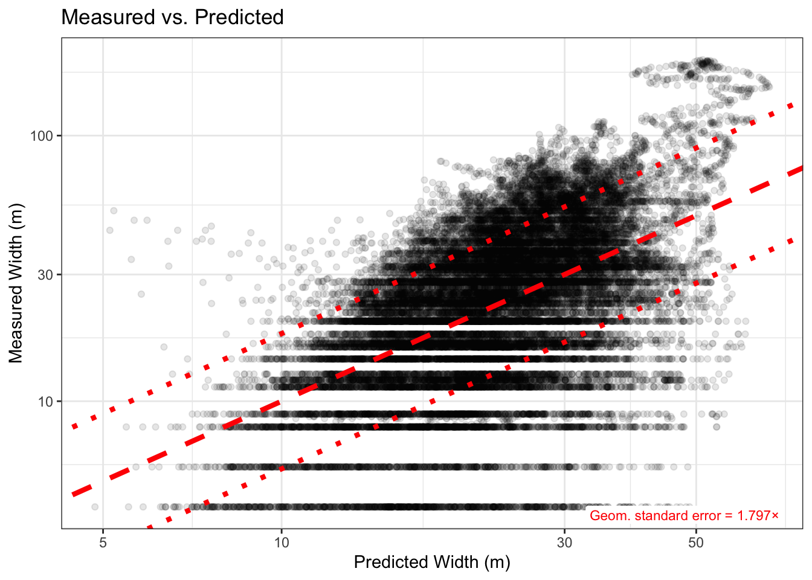
wrangell$width_se <- sigma(wrangell$width_fit)We use the same width modeling approach for Wrangell. The geometric standard deviation of the width data is 2.0, so overall there is less variance in runout width for Mitkof. However, the available covariates explain less of the variance using linear regression modeling. By modeling log_width using local topographic metrics logaccum, tangential_curv, log_grad, we reduce the geometric standard error to GSE = 1.801, meaning that the model explains 28% of the variance in width. By adding the cumulative vertical drop drop (the strongest of the positional predictors) the model has GSE = 1.790 (29% of the variance explained). If we substitute the local elevation dem for drop the model has GSE = 1.797 (28% of the variance explained).
Unlike for Mitkof, the positional variables drop and dem have almost no predictive power for runout widths on Wrangell. Including vertical drop would significantly complicate the model for minimal gain. Consequently, we opt for the same width model for Wrangell:
\[\text{log\_width} = 0.43 + 0.27 \text{logaccum} - 2.7 \text{tangential\_curv} + 0.27 \text{log\_grad} + 0.00017 \text{dem}\]
width_map <- 10^predict(wrangell$test_stack,wrangell$width_fit)
plot(wrangell$test_stack$hs, col = gray.colors(256), legend = FALSE,
main = "Wrangell Widths (m)")
plot(width_map,add = TRUE, alpha = 0.5, col = rev(hcl.colors(256, "RdYlGn")))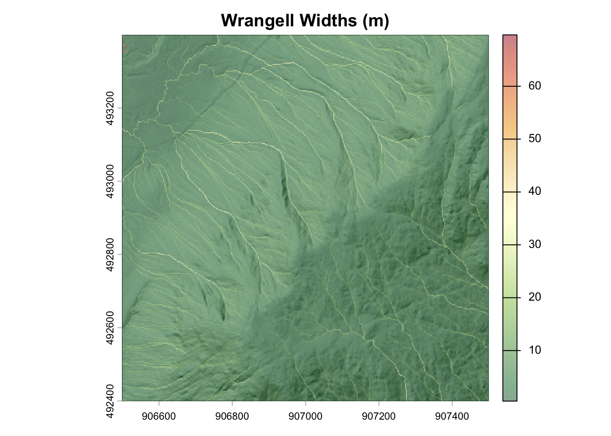
Modeling Inundation
To model inundation, we must extend runout probabilities according to predicted widths. We can achieve this by expanding runout probabilities across a circular kernel defined by the predicted local width. Both runout probabilities and predicted widths are highest along drainage paths. Therefore, inundation probability is also highest along drainage paths. If we expand full runout probabilities across the entire predicted widths, the inundation algorithm puts sharp boundaries for high inundation probability around drainage paths.
mitkof$test_stack$ls_prob <- rast(mitkof$test_stack$mask)
mitkof$test_stack$ls_prob[mitkof$test_df$ind] <- as.vector(predi(mitkof$init_fit,mitkof$test_df))
plot_inundation_blocky(mitkof)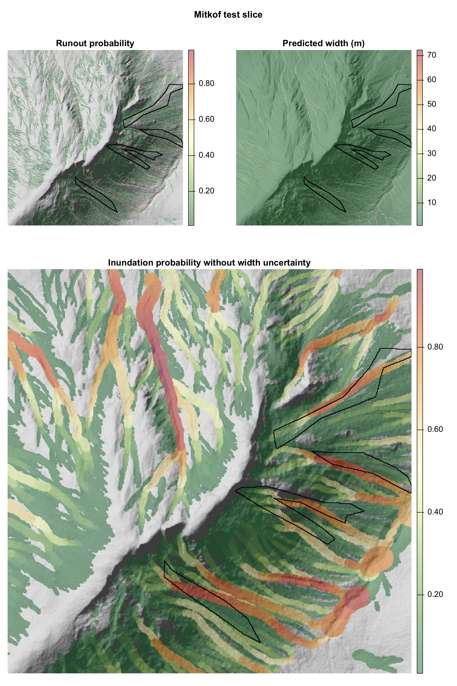
However, we know the uncertainty in our width estimates from fitting the linear regression model. We can carry this uncertainty through to the inundation predictions by modeling landslide width probabilistically. The figure below demonstrates how the probability of inundation along a runout path is expanded laterally to neighboring cells. Cells closest to the runout path have inundation probabilities that match the runout probability, but the risk of inundation decays log-normally away from runout path.
Below, we use this approach to map inundation probabilities for both Mitkof and Wrangell test slices. It is the same approach we use for full-scale predictions in the next page.
dist_m <- seq(0.1, 50, length.out = 500)
width <- 30
se <- .36
p_reach <- 1 - pnorm((log10(2 * dist_m) - log10(width)) / se)
dist_mirror <- c(-rev(dist_m), dist_m)
p_mirror <- c(rev(p_reach), p_reach)
plot(dist_mirror, p_mirror, type = "l", lwd = 2,yaxt = "n",
xlab = "Distance from runout centerline (m)", ylab = "Inundation probability",
main = "Inundation probability for 30 m predicted width")
axis(2, at = c(0.04, 0.5, 1),
labels = c("0", "50%", "100% runout\n probability"))
abline(v = c(-width/2, width/2), lty = 2, col = "red")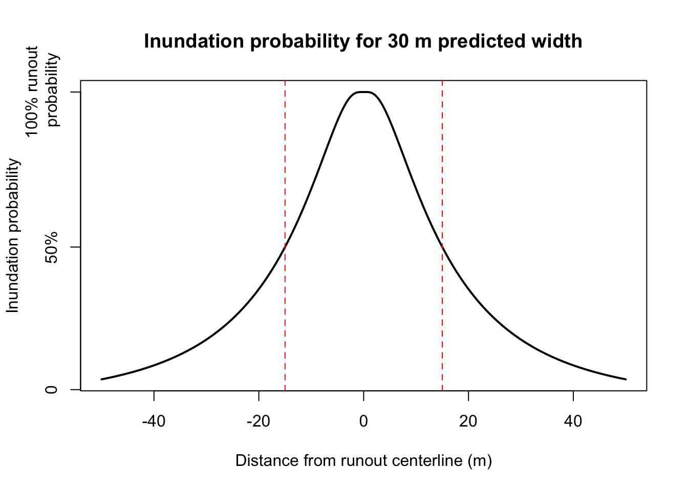
# legend("topright", legend = "width/2 = ±15m", lty = 2, col = "red", bty = "n")Mitkof
The Mitkof test-slice predictions demonstrate that the inundation model (along with all of the preceding models that produced the inputs) is effective at predicting the size and shape of landslides on the island. The position of the high-probability streaks is nearly aligned with the mapped landslide polygons (black polygons) but all of them are slightly offset. There are likely multiple explanations for this:
- The air photos that the landslide polygons were traced from may not be precisely georeferenced. It’s therefore possible that the DEM (used for the model predictions) and the mapped polygons are not co-registered.
- Our modeling follows steepest descent runout pathways. Landslide runouts (including debris flows) can easily jump channel banks at bends, or otherwise be thrown off course from obstacles that do not appear in the Lidar DEM (e.g., trees).
mitkof$test_stack$ls_prob <- rast(mitkof$test_stack$mask)
mitkof$test_stack$ls_prob[mitkof$test_df$ind] <- as.vector(predi(mitkof$init_fit,mitkof$test_df))
plot_inundation_test(mitkof)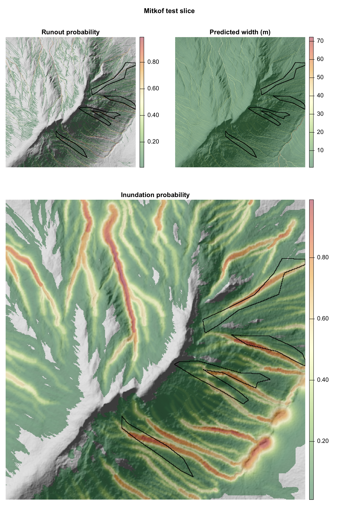
Wrangell
The inundation model for Wrangell produces similar high-probability streaks as we observed on Mitkof. These streaks intersect with all mapped polygons. However, the landslide polygons in the Wrangell test slice tend to be shorter and wider compared to most of the landslides in the database. The model tends to over-predict the runout distance (and therefore inundation area) for these short slides. This reflects the challenge of capturing a wide range of landslide runout dynamics using a single set of statistical models.
wrangell$test_stack$ls_prob <- rast(wrangell$test_stack$mask)
wrangell$test_stack$ls_prob[wrangell$test_df$ind] <- as.vector(predi(wrangell$init_fit,wrangell$test_df))
plot_inundation_test(wrangell)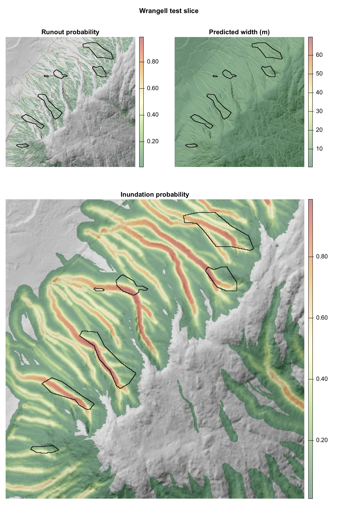